Exhibitions
Selected exhibitions
Vésper
Centro Cultural VERAS · Florianópolis · 2026
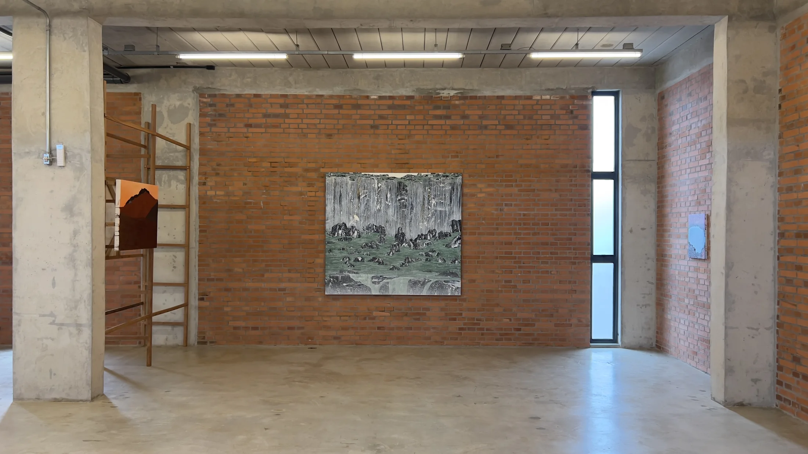
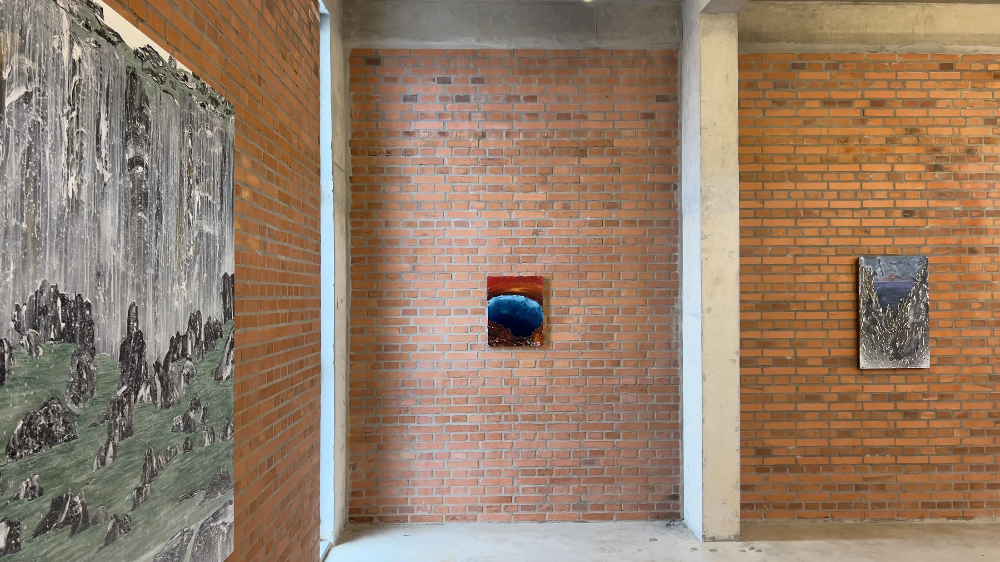
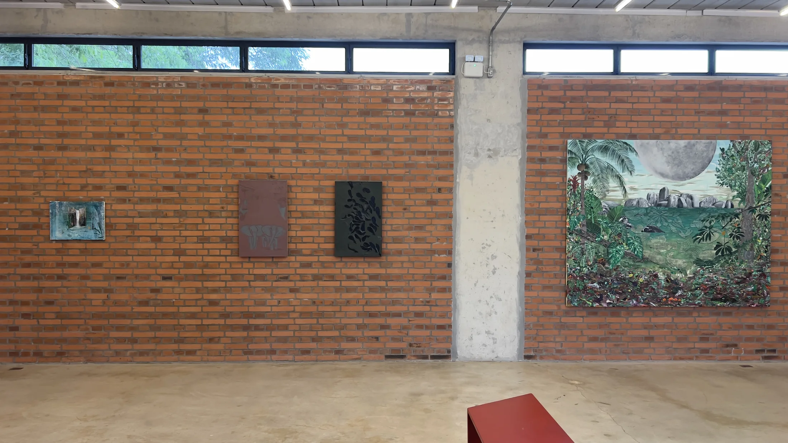
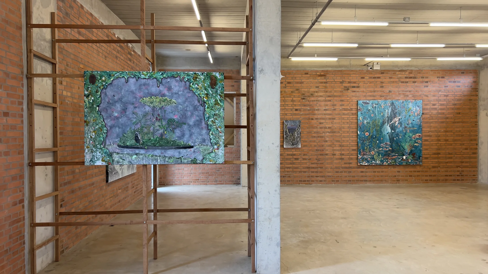
Águas Compostas
Zipper Galeria · São Paulo · 2025
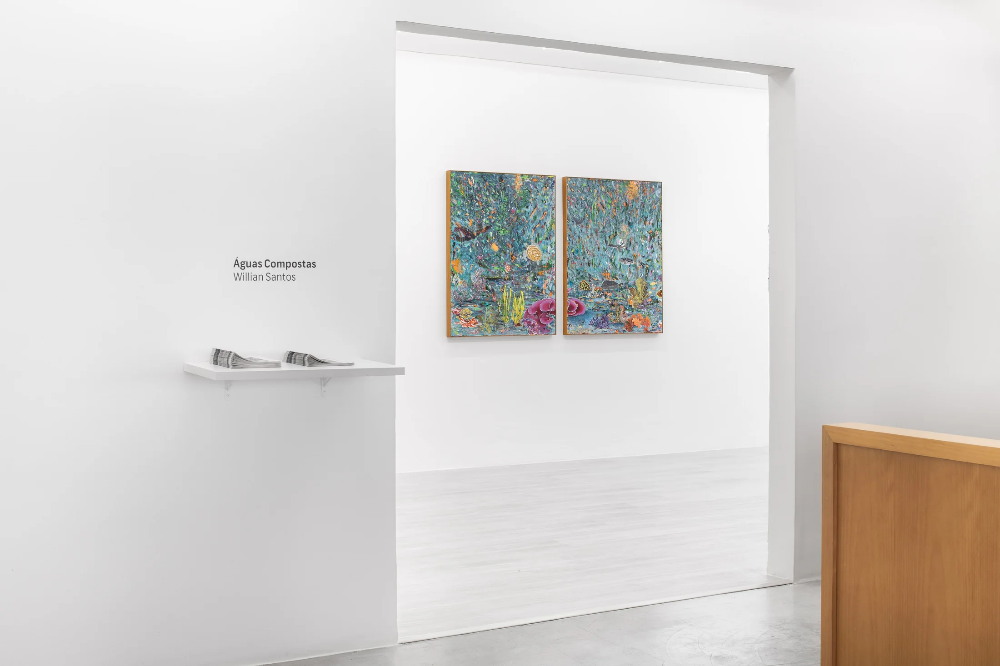
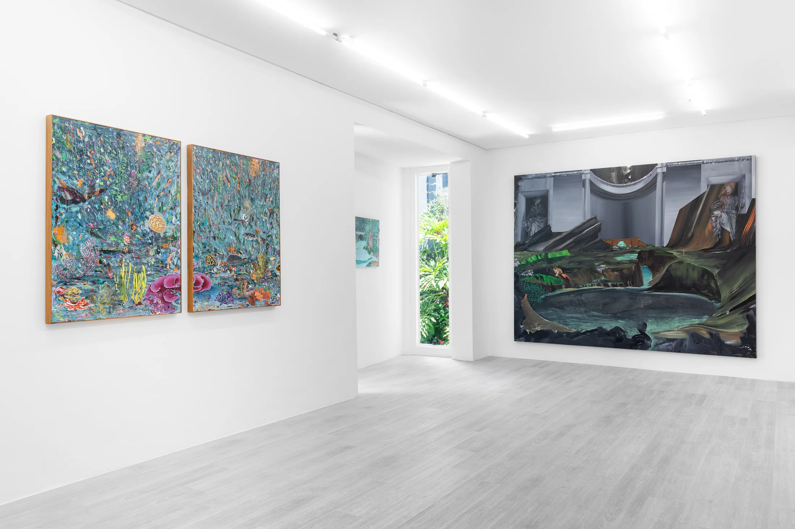
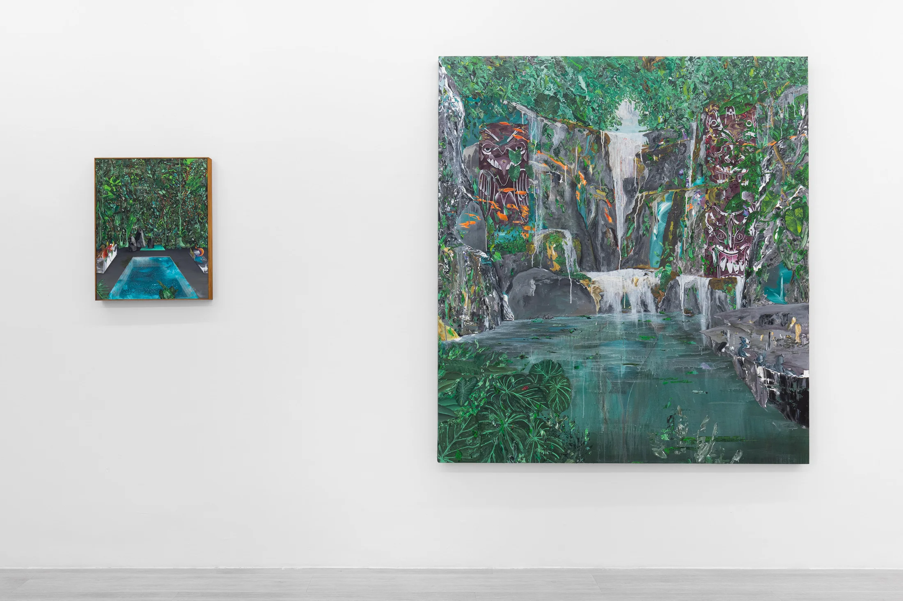
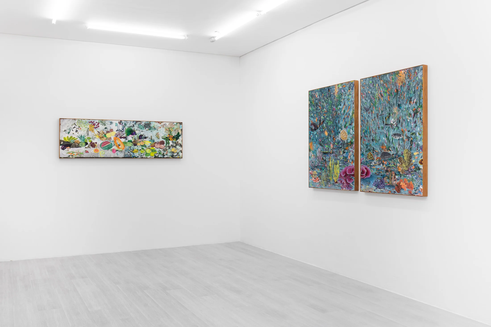
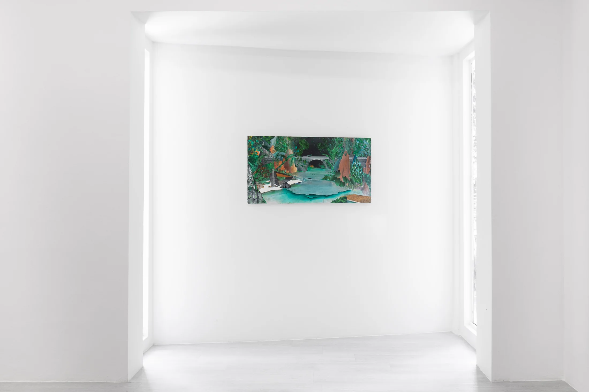
Recôndito Plasmado
Simões de Assis Galeria · Curitiba · 2018
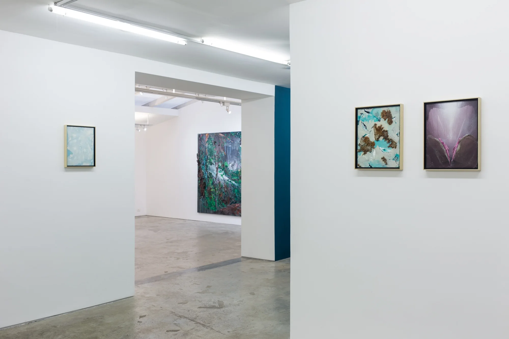
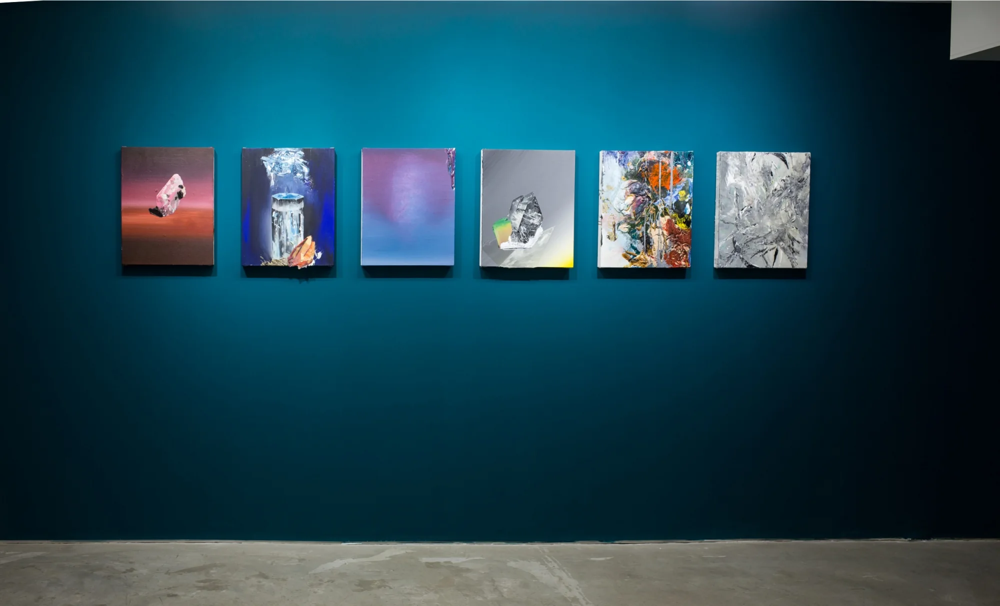
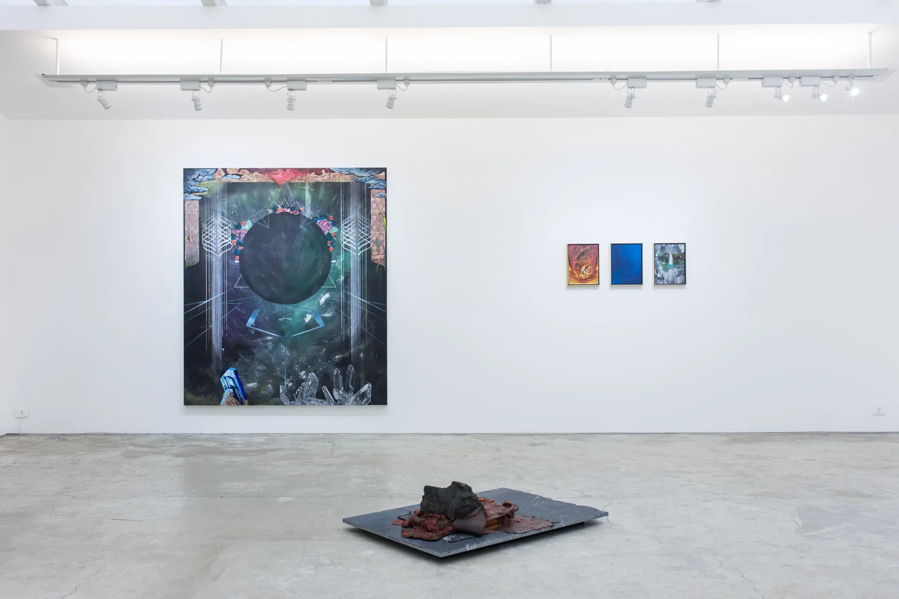
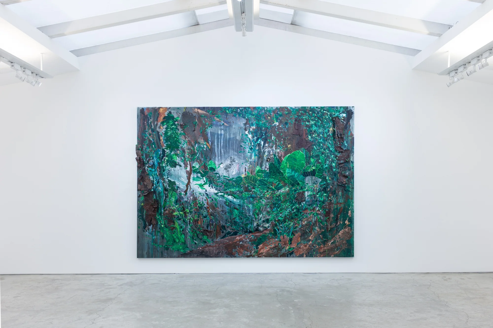
nem todo líquido se desmancha em ar
Galeria Casa da Imagem · Curitiba · 2013
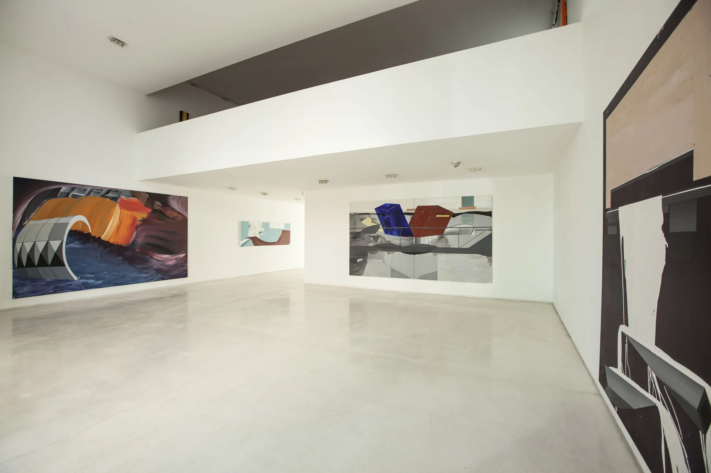
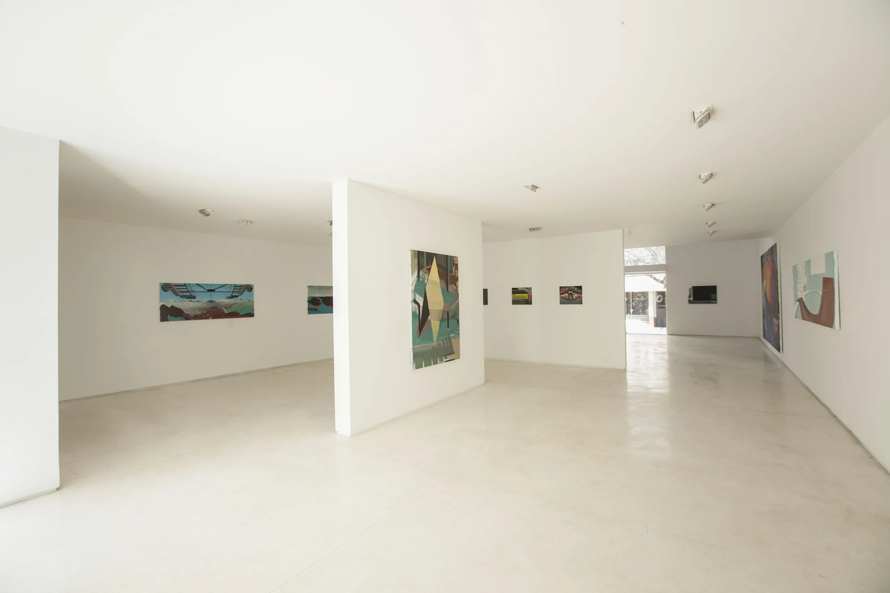